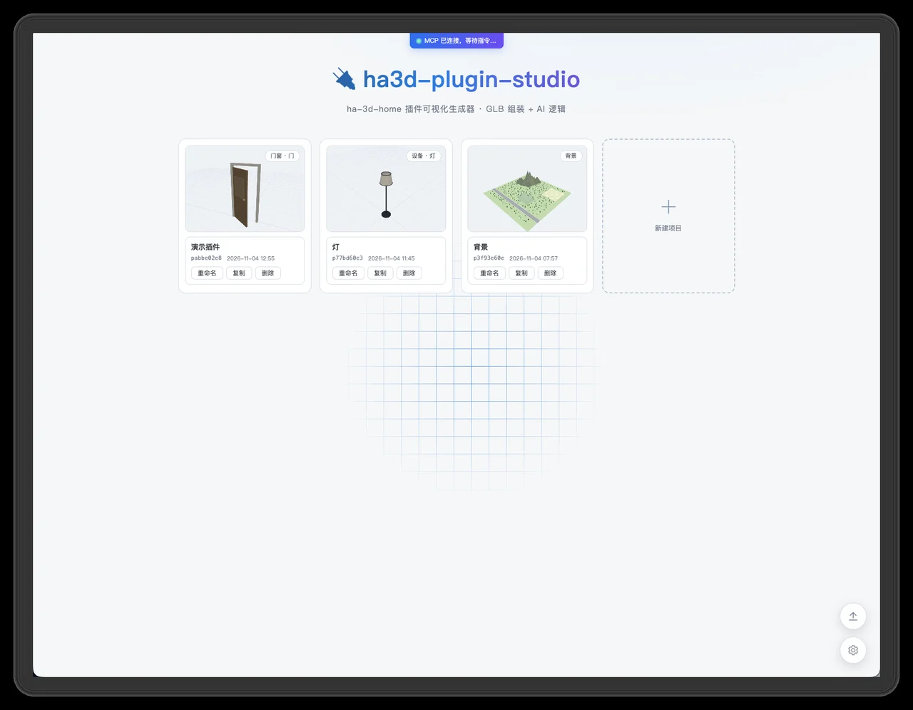
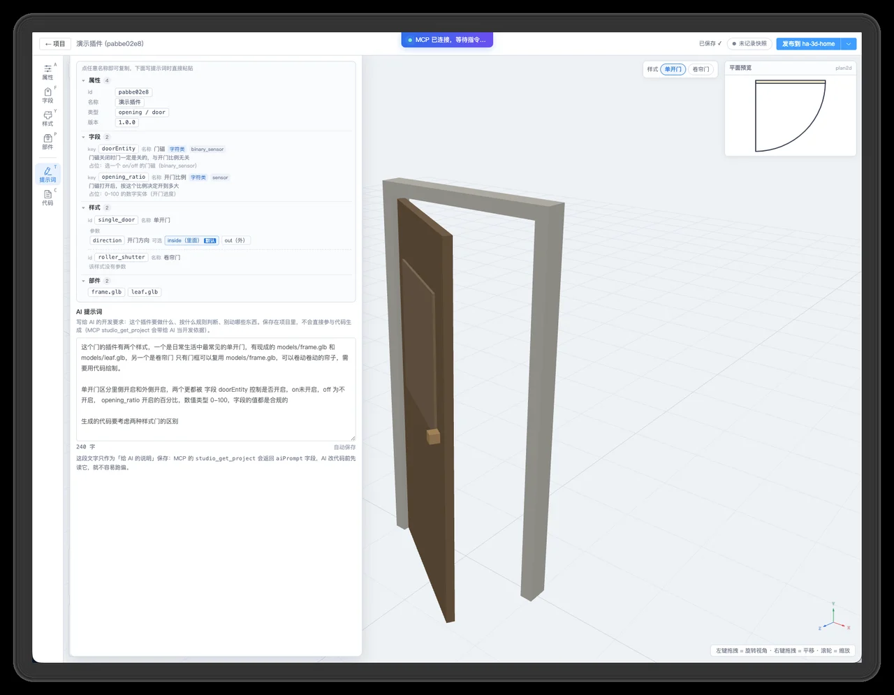
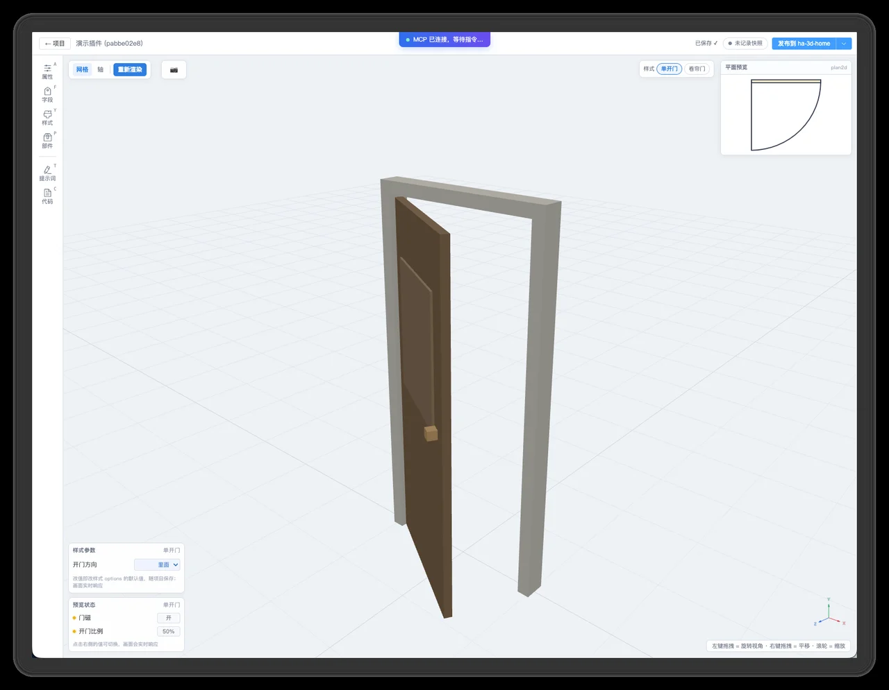
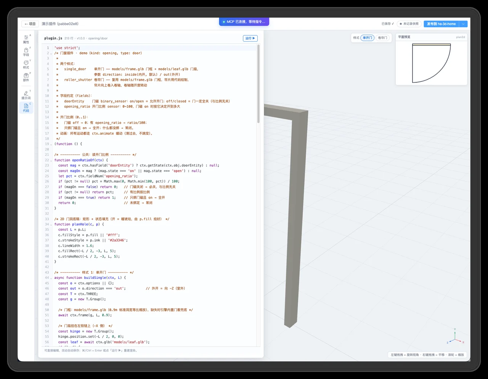
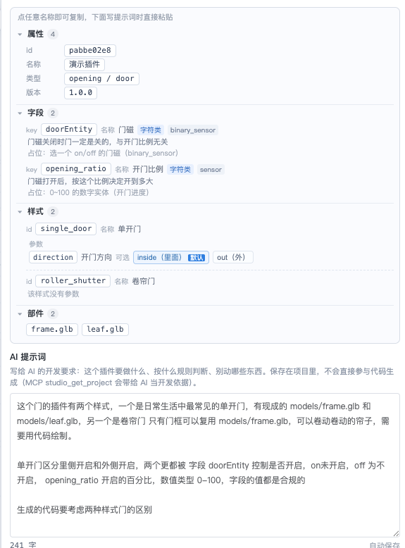
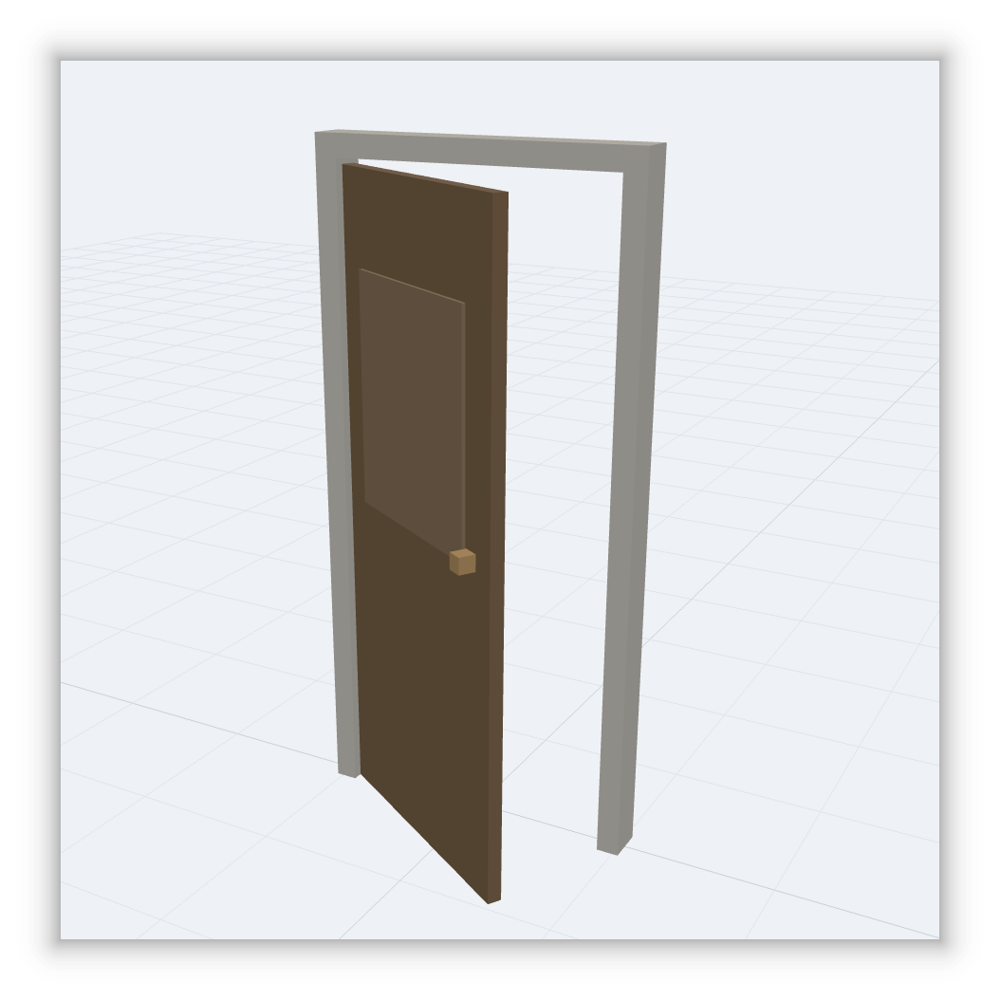
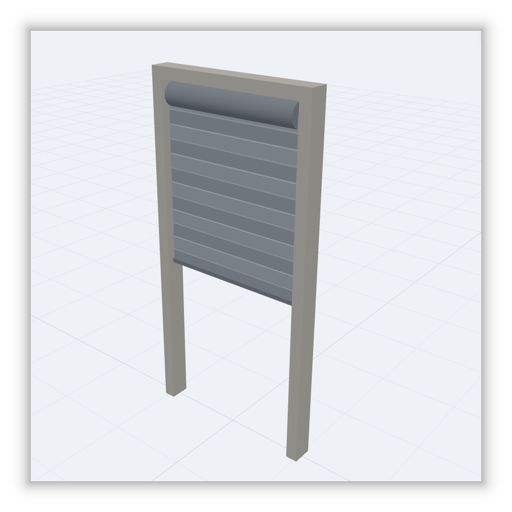
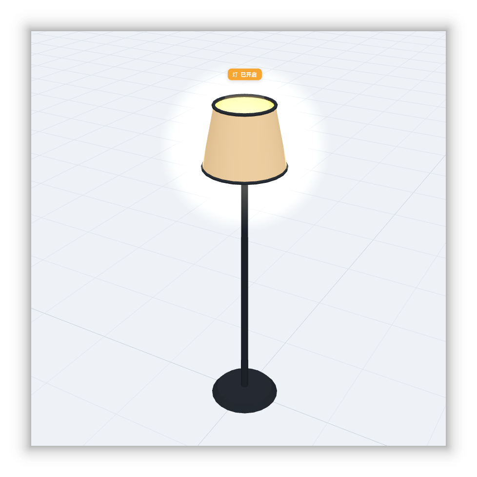
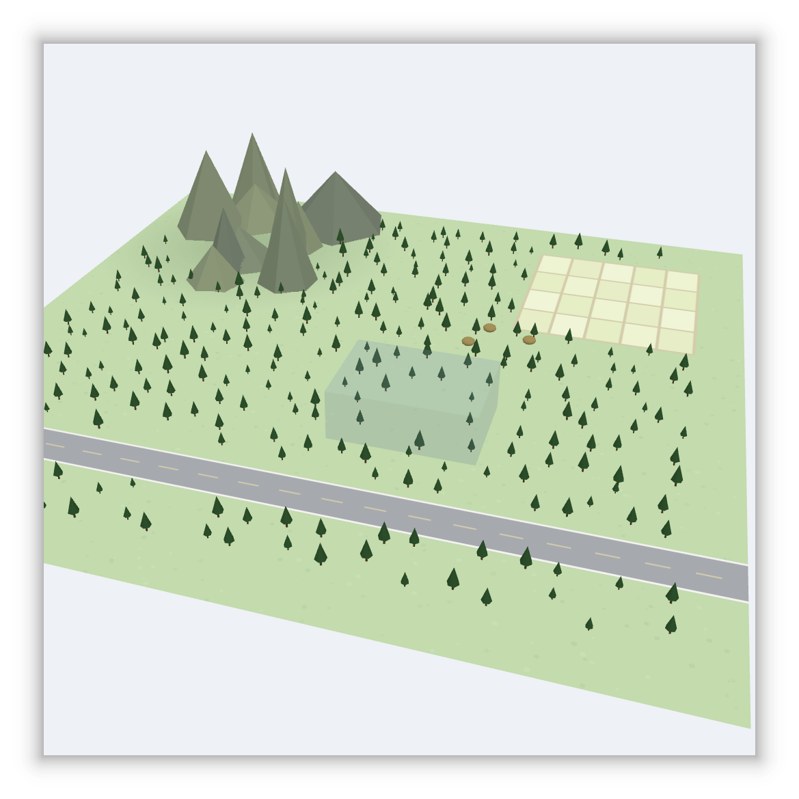

造 3D 插件，
动动嘴就能搞定
图形化的 ha-3d-home 插件开发台：在浏览器里创建插件项目、装配 GLB 模型、 实时预览。内置 MCP Server（26 个工具）， WorkBuddy 这类 AI 助手可以全流程读写与验证—— 从一句话需求，到可安装的插件压缩包。
- 🖱️图形化装配建项目 · 传模型 · 写提示词
- 🤖AI 全程协作MCP 接入，写完插件自己核验效果
- 📦一键交付导出 zip 或直接发布，版本号自动写回
从模型到插件，一条流水线跑完
编辑页所见即所得：改配置、换造型、调参数，前端实时重建渲染，不用来回刷新。
模型工具链
上传 / 拆分 / 重命名 / 删除 GLB，返回结构摘要与代码引用检查；一键修复材质发黑（sRGB、metallic、roughness）。
视觉自检闭环
摆相机、按预设视角截图、模拟点击设备、推实体状态、跑运行期体检——AI 能「看到」自己写的插件长什么样。
一键交付
导出插件压缩包（zip），或直接发布到 ha-3d-home 远程安装、版本号自动写回——做好的插件立刻能在家里用。
四张截图，看完全流程
从起始页建项目，到 AI 生成代码、一键发布——每个环节长什么样，一目了然。

项目都在这一屏，建好了随时回来改；右下角新建下一个。

需求写清楚，AI 就不用猜——改需求，永远比改代码快。

转一圈、推个状态、截一张图，AI 验收和你看到的是同一个画面。

看不懂代码也没关系，它本来就是写给 AI 看的。
26 个工具，AI 全流程读写与验证
从读取配置、生成代码，到推送状态、截图验收——WorkBuddy 这类 AI 助手经 MCP 全程操作工作台。

frame.glb 内洞 = 宽 0.90 × 高
2.05；leaf.glb 门扇 0.86 宽 × 1.98 高。现有代码门扇只缩到
0.82 宽，比洞口窄 8cm —— 这就是大缝隙的来源。修正：门扇四边只留 1cm
合缝，宽 L−0.02、高 2.03。一句话，生成即所见
全部由 AI 在工作台里真实生成、直接运行的效果截图。




一条命令，在自己家里跑起来
单容器、一条 docker compose up -d --build 起来。挂一个卷（插件项目），升级镜像不丢数据。
docker compose up -d --build，或本地 npm install && npm run client:build && npm start（首次需装依赖并构建前端）。
浏览器访问 http://主机IP:8098，新建插件项目：传 GLB、摆部件、绑 HA
实体，改动实时预览。
在 WorkBuddy 里添加 MCP 地址 http://主机IP:8098/mcp/sse，
26 个工具全流程可用，一句话让 AI 把插件写出来。
Studio 设置里填 Home 地址（如 http://主机IP:8099）与安装密钥，一键发布——Home 需在线。
💡 两个容器在同一台机器上时，Studio 填 http://host.docker.internal:8099（Linux 用宿主机内网 IP）。
services:
ha3d-plugin-studio:
build: .
image: ha3d-plugin-studio:latest
container_name: ha3d-plugin-studio
ports:
- "8098:8098"
volumes:
- "./data:/data" # 插件项目 + 全局配置
environment:
NODE_ENV: production
PORT: 8098
HA3D_STUDIO_DATA_DIR: /data # 数据目录走卷
restart: unless-stopped
mem_limit: 256m # 拆 GLB / 打包时略吃内存
同样是离线包（镜像里已构建好前端与生产依赖）：
# 产物 dist/ha3d-plugin-studio-latest-<arch>.tar → docker load
npm run pack:image:amd64
docker compose up -d --build
或 npm run pack:image
打包后部署，步骤见上面。